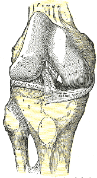
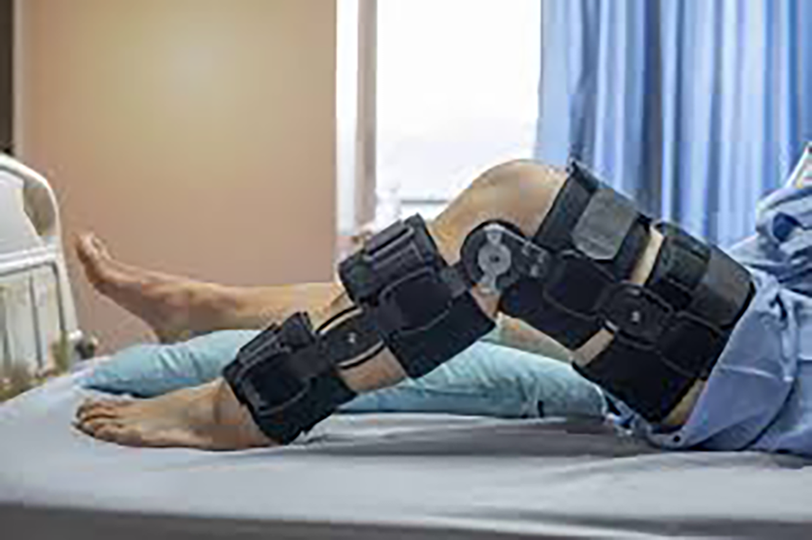

Injuries to the ACL are relatively common knee injuries among athletes.[1] They occur most frequently in those who play sports involving pivoting (e.g. football, basketball, netball, soccer, European team handball, gymnastics, downhill skiing). They can range from mild (such as small tears/sprain) to severe (when the ligament is completely torn). Both contact and non-contact injuries can occur, although non-contact tears and ruptures are most common. It appears that females tend to have a higher incidence rate of ACL injury than males, that being between 2.4 and 9.7 times higher in female athletes competing in similar activities.
The ACL is a band of dense connective tissue which courses from the femur to the tibia. It is considered as a key structure in the knee joint, as it resists anterior tibial translation and rotational loads. The ACL arises from the posteromedial corner of the medial aspect of the lateral femoral condyle in the intercondylar notch and inserted anterior to the intercondyloid eminence of the tibia, blending with the anterior horn of the medial meniscus. The ACL courses anteriorly, medially, and distally across the joint as it passes from the femur to the tibia. As it does, it turns on itself in a slight outward (lateral) spiral. There are two components of the ACL, the smaller anteromedial bundle (AMB) and the larger posterolateral bundle (PLB), named according to where the bundles insert into the tibial plateau. When the knee is extended the PLB is tight and the AMB is moderately lax. However, as the knee is flexed, the femoral attachment of the ACL assumes a more horizontal orientation, causing the AMB to tighten and the PLB to loosen and thus leave the AMB as the restraint to anterior tibial load.
Primary restraints to anterior tibial displacement: counting for 85% of the resistance to anterior drawer test, when the knee is kept at 90 degree of flexion. Secondary restraints to tibial rotation & varus : valgus angulation at full knee extension. Proprioceptive function: presence of mechanoreceptors in the ligaments
Three major types of ACL injuries are described:
Direct Contact: 30% of the cases.
Indirect Contact.
Non-Contact: 70% of the cases: by doing a wrong movement.
Anterior cruciate ligament (ACL) injuries are common in young individuals who participate in sports activities associated with pivoting, decelerating and jumping.
Most common are the non-contact injuries caused by forces generated within the athlete’s body. While, most other sport injuries involve a transfer of energy from an external source. Approximately 75% of ruptures are sustained with minimal or no contact at the time of injury.
A cut-and-plant movement is the typical mechanism that causes the ACL to tear, being a sudden change in direction or speed with the foot firmly planted. Rapid deceleration moments, including those that also involve planting the affected leg to cut and change direction, have also been linked to ACL injuries, as well as landing from a jump, pivoting, twisting, and direct impact to the front of the tibia
Women are three times more prone to have the ACL injured than men and is thought to be due to the following reasons:
1.Smaller size and different shape of the intercondylar notch: A narrow intercondylar notch and a plateau environment are risk factors of predisposing female non-athletes with knee OA to ACL injury aged 41-65 years.
2.Wider pelvis and greater Q angle: A wider pelvis requires the femur to have a greater angle towards the knee, lesser muscle strength provides less knee support, and hormonal variations may alter the laxity of ligaments.
3.Greater ligament laxity: Young athletes with non-modifiable risk factors like ligament laxity are at a particularly increased risk of recurrent injury following ACL reconstruction (ACLR).
4.Shoe surface interface: The pooled data from the three studies suggest that the chances of injury are approximately 2.5 times higher when higher levels of rotational traction are present at the shoe-surface interface
5.Neuromuscular factors.
6.The mechanism of ACL injury may differ in females especially with respect to the dynamic positioning of the knee, as females demonstrate greater valgus collapse of the LE primarily in the coronal plane.
Risk factors for ACL injuries include environmental factors (e.g. high level of friction between shoes and the playing surface) and anatomical factors (e.g. narrow femoral intercondylar notch). The injury is characterized by joint instability, which is associated with both acute dysfunction and long-term degenerative changes such as osteoarthritis and meniscal damage. Knee instability leads to decreased activity, which can lead to poor knee-related quality of life. The risk factors for ACL injury have been considered as either internal or external to an individual. External risk factors include type of competition, footwear and surface, and environmental conditions. Internal risk factors include anatomical, hormonal and neuromuscular risk factors.

Although every individual is different, you can expect the following rough timeline for ACL surgery recovery
he First 2 Weeks After Surgery
his is a critical time during the recovery process because it is when your body is most vulnerable. Surgery is a traumatic experience for your muscles, ligaments, and other tissues, which is why the body responds with inflammation. During the period immediately after surgery, you may experience pain, swelling, and the buildup of excess fluid around the knee joint. The rehabilitation process starts right after the surgery, and you may be given exercises that must be performed daily to support your recovery. During this time, your ability to bear weight on the affected leg may be limited, so plan on using crutches and limiting your mobility for at least 10 days.
Rehabilitation tips to try:
Elevate the leg, and apply therapeutic cold every two hours.
Place the leg over the edge of a bed or chair for knee flexion.
Place a prop under the heel when straight for knee extension.
Do gait training to prepare for removal of crutches.
2-6 Weeks After Surgery
You may be able to bear weight on both legs during this time, but activity may still be limited as your tissues are actively healing. Depending on the type of car you drive, your medication use, and which leg is injured, you might also be able to resume driving during this time. Your physical therapist will focus on helping you regain full range of motion. Because your knee is still vulnerable at this stage, you may have to wear a protective brace to protect it from unnecessary stress
Rehabilitation tips to try
Perform walking exercises for 15- to 20-minute intervals.
Do leg strengthening exercises such as squats, leg presses, and hamstring curls if advised by your PT.
Add stationary bicycle and elliptical training.
6 Weeks to 3 Months After Surgery
As the healing process progresses and your knee continues to grow stronger, you may be allowed to do more low-impact activities such as cycling, swimming, and rowing. By the end of this period, you may be able to resume light jogging if your physical therapist thinks you are ready.
Rehabilitation tips to try
Perform lateral training exercises such as lunges and side steps.
Do flutter-style swimming strokes.
Avoid cutting or pivoting motions.
Continue strength exercises, and begin sport-specific training.
3-6 Months After Surgery
During this time, you may be more eager to return to sports. Your physical therapist may recommend sport-specific activities to help you prepare for your return. He or she might also show you ongoing exercises that may help protect the ACL and help prevent future injury. A knee brace may be recommended during this period, even for low-impact activities.
Rehabilitation tips to try:
Slowly return to running activities.
Introduce jumping and agility training.
Work toward single-leg plyometric exercises.
After six months, assuming your damaged tissues have fully healed, you can return to athletic activity. Some doctors recommend the use of a supportive brace for 1-2 years after ACL surgery.
ACL Surgery Recovery Tips
Being proactive in your recovery may help you heal as quickly as possible, experience less pain, and return more quickly to your previous activity level.
Be Patient During Physical Therapy
It can be tempting, especially for athletes, to push your body to the limit when doing physical therapy. Although it is important to perform the recommended strengthening and stretching exercises, doing too much too soon can actually slow down the recovery process. Follow your physical therapist’s recommendations about which exercises are appropriate and how much you can do. If you think you can do more, check with your physical therapist before attempting to go further.
Use Cold Therapy to Control Inflammation
Pain and swelling are at their peak in the first week after ACL surgery.1 It is especially important to apply cold therapy during this period to help reduce swelling and naturally control pain. Adding active compression with a cold therapy device may further reduce swelling by helping your body pump away excess fluid and enabling the cold to penetrate deeper for a longer-lasting therapeutic effect.5 Continuing to use cold therapy for the duration of your recovery may help promote healing and control any pain and swelling you might experience after physical therapy sessions.
So how long will you be on crutches after surgery? It depends on a number of factors, but if you are proactive about accelerating the healing process, you may be off crutches as soon as two weeks after surgery.
References:
ACL reconstruction surgery: before and after recovery timeline. UPMC HealthBeat.